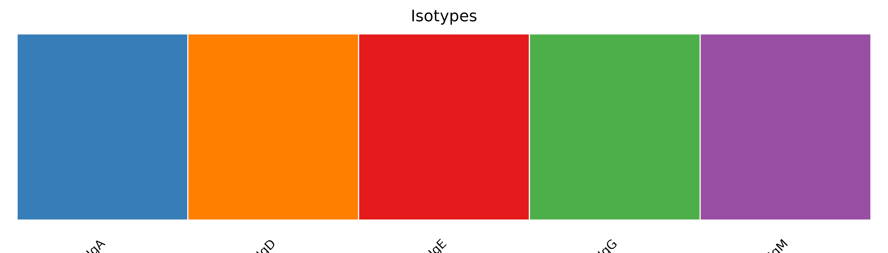
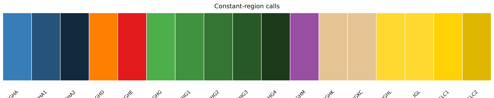
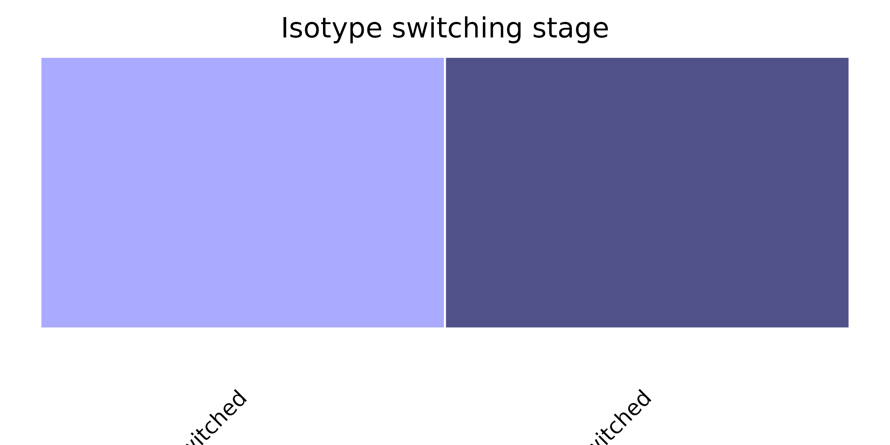
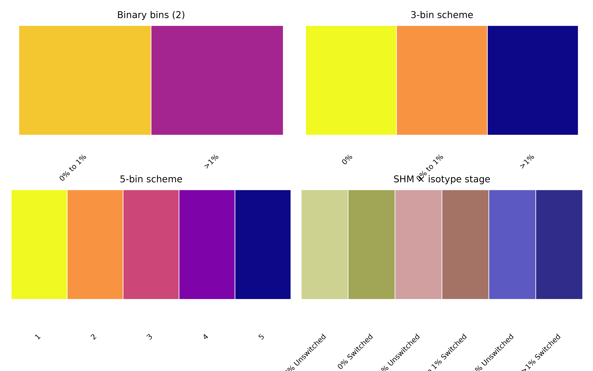
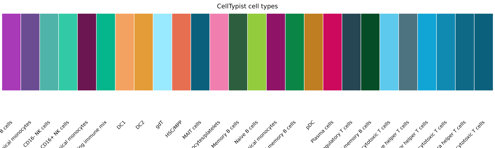
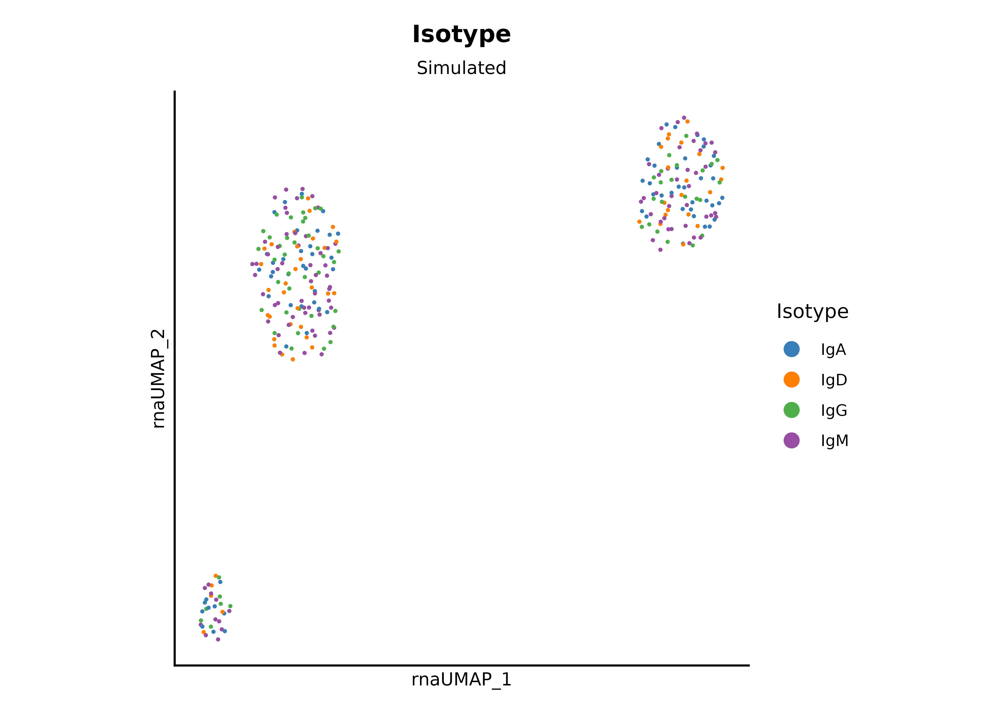
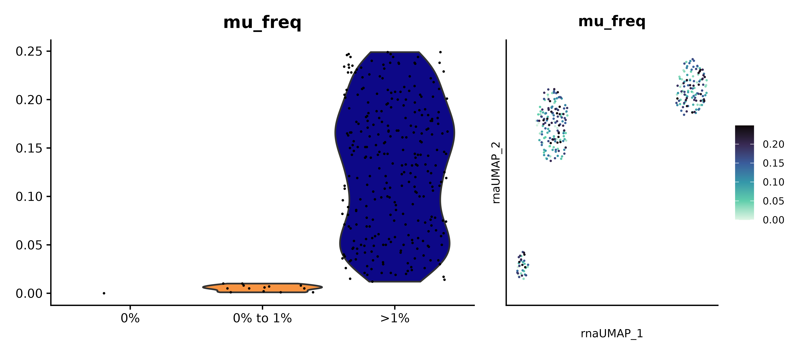
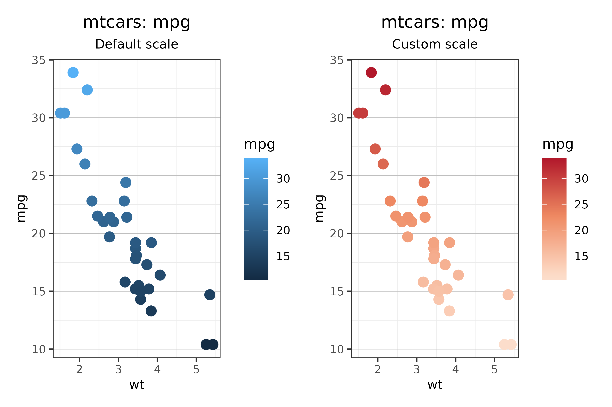
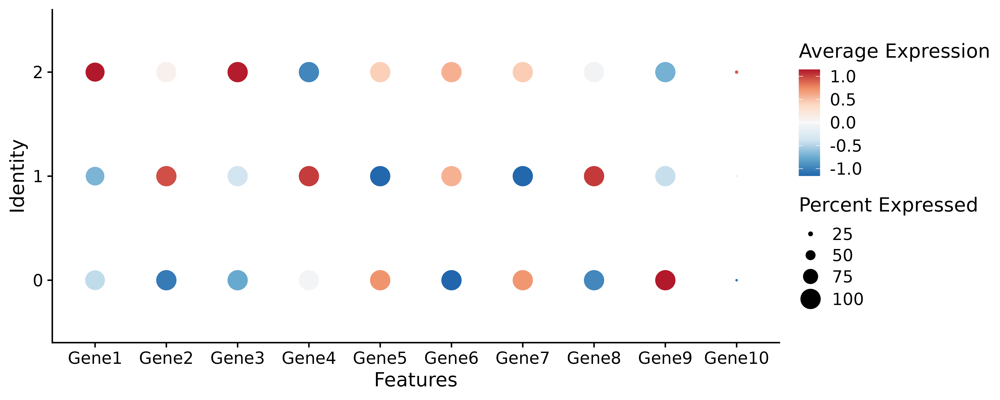
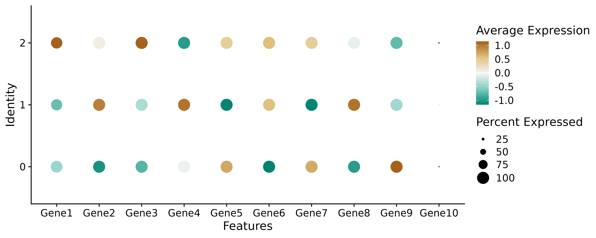

athanor includes named_colors, a curated
list of named character vectors that map categorical values to
hexadecimal colors. These can be passed as the
clrs_specific argument in plotting functions and are
designed to be consistent and colorblind-friendly.
In addition, a companion function called
plot_color_scale(), generates a data-anchored diverging
color scale for continuous data which is particularly useful with
Seurat’s DotPlot.
Setup
library(athanor)
library(dplyr)
library(ggplot2)
library(Matrix)
library(patchwork)
library(Seurat)
# helper to display a named color vector as a swatch strip
# could also use colorspace::swatchplot() or scales::show_col()
show_palette <- function(colors, title = "") {
if (names(colors) %>% is.null()) {
names(colors) <- seq_along(colors)
}
df <- data.frame(x = seq_along(colors),
label = factor(names(colors), levels = names(colors)),
fill = unname(colors))
ggplot(df, aes(x = label, y = 1, fill = I(fill))) +
geom_tile(color = "white", linewidth = 0.3) +
labs(title = title) +
theme_void() +
theme(plot.title = element_text(size = 9, hjust = 0.5),
axis.text.x = element_text(size = 7, angle = 45, hjust = 1))
}1. Overview of named_colors
Most of the names will match metadata columns in the Seurat objects and combined BCR data.
# all palette categories available
sort(names(named_colors))
#> [1] "c_call" "cdr3" "cell_types_celltypist"
#> [4] "cell_types_simpler" "d_call_family" "datatype"
#> [7] "doublet" "embeddings" "isotype"
#> [10] "isotype_stage" "j_call_family" "j_call_igh_family"
#> [13] "j_call_igk_family" "j_call_igl_family" "locus_light"
#> [16] "mu_freq_bins" "mu_freq_bins_binary" "mu_freq_bins_fewer"
#> [19] "mu_freq_iso" "v_call_family" "v_call_igh_family"
#> [22] "v_call_igk_family" "v_call_igl_family" "weight_assay"
#> [25] "weights"2. BCR biology palettes
Isotypes and constant-region calls
show_palette(named_colors$isotype, "Isotypes")
show_palette(named_colors$c_call, "Constant-region calls")
Isotype switching stage
show_palette(named_colors$isotype_stage, "Isotype switching stage")
Somatic hypermutation frequency bins
Note that the default binned colors are not named as the maximum bin depends on the dataset.
p1 <- show_palette(named_colors$mu_freq_bins_binary, "Binary bins (2)")
p2 <- show_palette(named_colors$mu_freq_bins_fewer, "3-bin scheme")
p3 <- show_palette(named_colors$mu_freq_bins, "5-bin scheme")
p4 <- show_palette(named_colors$mu_freq_iso, "SHM × isotype stage")
(p1 + p2) / (p3 + p4)
3. General palettes
Cell type annotations
show_palette(named_colors$cell_types_celltypist, "CellTypist cell types")
4. Using palettes with plotting functions
All plot_* functions in athanor accept a
clrs_specific argument. Pass a named_colors
entry whose names match the values in the metadata column being
plotted.
Simulated Seurat object
n_cells <- 300
n_genes <- 200
obj <- sim_gex_splatter(num_genes = n_genes, num_cells = n_cells,
splatter_groups = c(0.5, 0.4, 0.1),
splatter_method = "groups")
obj <- seurat_pipeline(obj, nfeatures_RNA = 0, perc_mt = 100,
num_features = n_genes, num_pcs = 15, num_dims = 10,
k_param = 20, cluster_res = 0.5, verbose = FALSE)
# add BCR metadata
obj$isotype <- factor(sample(c("IgM", "IgD", "IgA", "IgG"), n_cells,
replace = TRUE, prob = c(0.35, 0.15, 0.30, 0.20)))
obj$mu_freq <- round(runif(n_cells, 0, 0.25), 3)
obj <- bin_mu_freq(obj)
plot_dimplot(seurat_obj = obj, data_source = "Simulated",
clrs_specific = named_colors$isotype, meta_col = "isotype",
reduc = "rna.umap", title = "Isotype", legend_label = "Isotype",
plot_label = FALSE)
plot_vln_feat(seurat_obj = obj,
clrs_specific = named_colors$mu_freq_bins_fewer,
feature = "mu_freq", meta_col = "mu_freq_bins_fewer",
title = "SHMfrequency", reduc = "rna.umap")
If a value in your data has no matching entry in
clrs_specific, athanor will fall back to a
default ggplot2 color scale. To add colors for custom categories, extend
the relevant palette:
my_colors <- c(named_colors$isotype, "NA" = "#cccccc")
my_colors
#> IgA IgD IgE IgG IgM NA
#> "#377EB8" "#FF7F00" "#E41A1C" "#4DAF4A" "#984EA3" "#cccccc"5. Continuous color scales with plot_color_scale()
plot_color_scale() anchors a diverging palette so that
zero maps to white and the positive / negative extremes are symmetric.
This is particularly useful for Seurat DotPlot output,
where the default color mapping can misrepresent where zero falls.
# continuous example with a regular ggplot2
p <- ggplot(mtcars, aes(x = wt, y = mpg, color = mpg)) +
geom_point(size = 3) +
labs(title = "mtcars: mpg", subtitle = "Default scale")
# you can specify which column to pull values from
p_scaled <- plot_color_scale(plot = p, val_col = "mpg") +
labs(title = "mtcars: mpg", subtitle = "Custom scale")
(p + p_scaled) & athanor::theme_bw_custom & athanor::labels_standard
# typical usage with a Seurat DotPlot
p <- DotPlot(obj, features = stringr::str_c("Gene", 1:10), assay = "RNA")
# you can pass a plot in with a pipe
p %>% plot_color_scale() # default parameters
# can change the colors as desired
plot_color_scale(plot = p, palette = rev(pals::brewer.brbg(n = 5)))
The palette argument accepts any vector of colors,
defaulting to a red–blue diverging scheme from
pals::brewer.rdbu. Use fill_by = "fill" for
geoms that use the fill aesthetic rather than color.